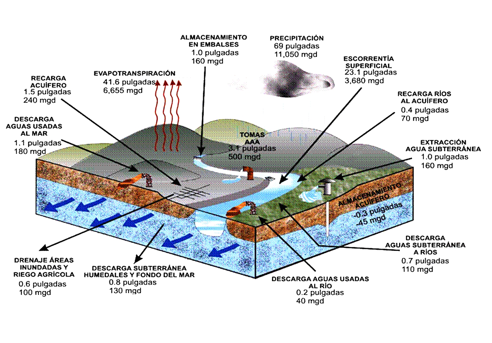
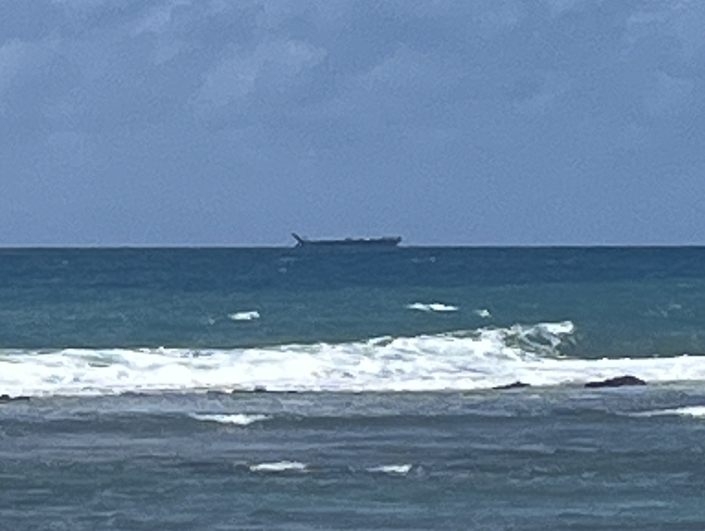
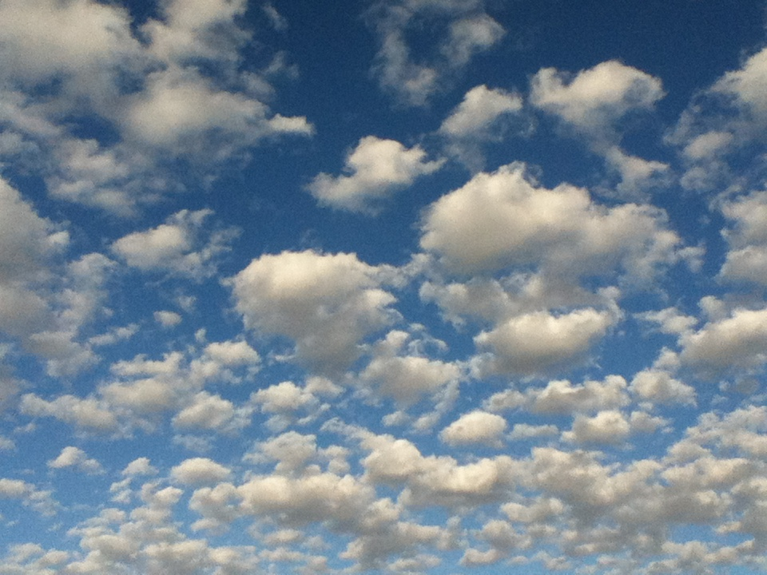
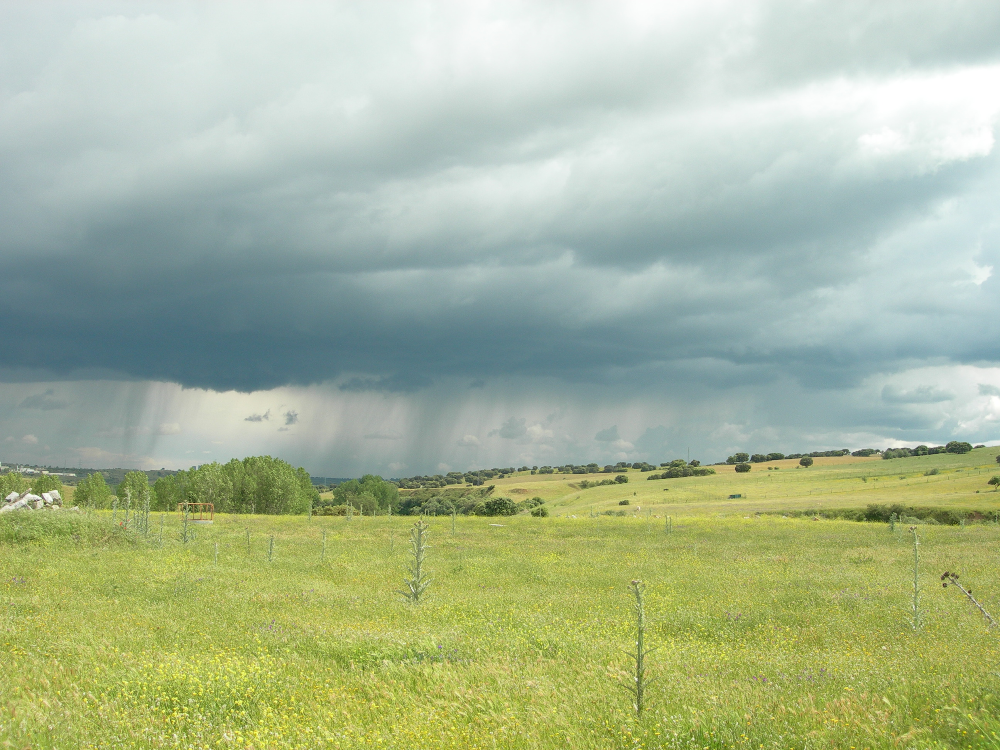

¡Bienvenidos al Mundo del Ciclo del Agua!
¿Alguna vez te has preguntado de dónde viene la lluvia que moja nuestros coquíes o cómo el agua llega a nuestros ríos y playas? ¡Prepárate para un viaje fascinante a través del ciclo del agua!
☀️ Evaporación: El Agua se Desvanece... ¡Pero no por Completo!
Imagina el sol brillando fuerte en nuestras playas como Luquillo o Boquerón. Ese calor hace que el agua de los océanos, ríos como el Río Grande de Loíza y lagos como el Lago Caonillas se convierta en un gas invisible llamado vapor de agua y suba al cielo. ¡Es como magia!
☁️ Condensación: ¡Las Nubes se Forman!
A medida que el vapor de agua sube, el aire se enfría. Este vapor se junta con pequeñas partículas de polvo y forma pequeñas gotitas de agua o cristales de hielo, ¡creando las nubes que vemos sobre El Yunque o la Cordillera Central!
🌧️ Precipitación: ¡El Cielo Nos Regala Agua!
Cuando las gotitas de agua o los cristales de hielo en las nubes se hacen muy pesados, caen a la tierra en forma de lluvia (como la que a veces nos sorprende en un paseo por el Viejo San Juan), nieve (¡aunque no es común aquí, podemos aprender sobre ella!), aguanieve o granizo.
🏞️ Colección: El Agua Regresa a Casa
El agua que cae a la tierra se acumula en ríos, lagos, océanos y también se filtra bajo el suelo (agua subterránea). Esta agua es vital para nuestros embalses como el de Carraízo, que nos proveen agua para nuestras casas y para regar las cosechas de nuestros agricultores.

💧 El Ciclo del Agua y Puerto Rico: ¡Estamos Conectados!
El ciclo del agua es súper importante para nuestra isla:
- **Agua para todos:** Nos da el agua que necesitamos para beber, cocinar y ducharnos.
- **Agricultura:** Ayuda a que crezcan las frutas como el mango y el pana, y el café de nuestras montañas.
- **Naturaleza:** Mantiene vivos nuestros bosques tropicales, los ríos donde viven peces y los hermosos arrecifes de coral.
- **Energía:** Se utiliza para generar energía hidroeléctrica en algunas de nuestras represas.
- **Peligros:** A veces, cuando llueve mucho, pueden ocurrir inundaciones que afectan nuestras comunidades. ¡Por eso es importante entender el ciclo del agua!
¡Ponte a Prueba!
¿Cuánto has aprendido sobre el ciclo del agua? ¡Menciona las etapas en el orden correcto!